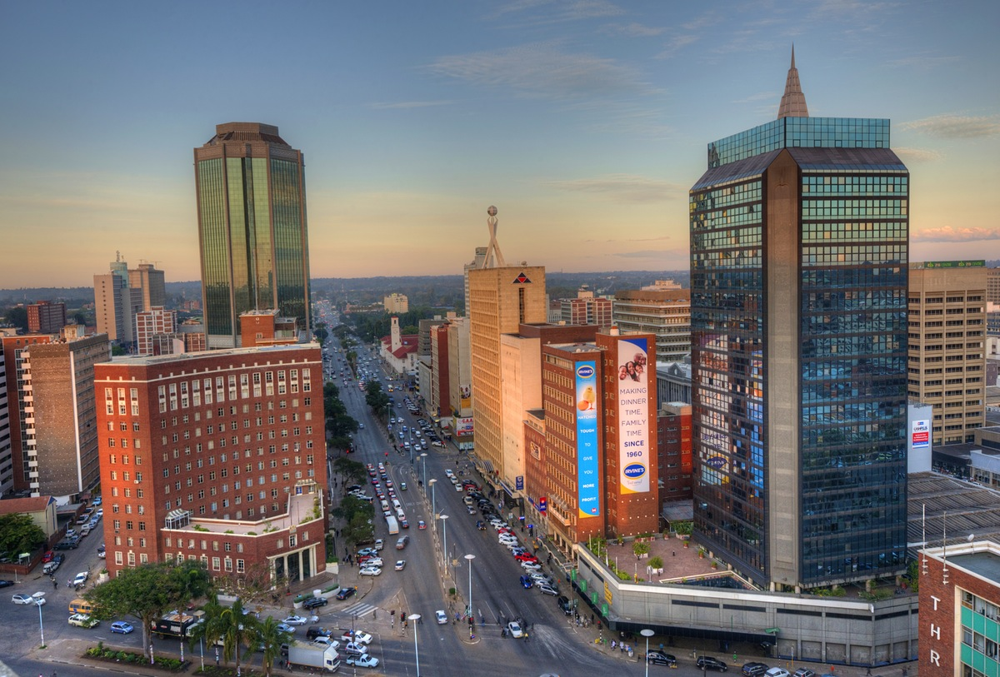

About Zimbabwe
- Location:
-
Zimbabwe lies in Southern Africa, between South Africa and Zambia.
- Area:
-
Zimbabwe covers 390,580 sq km, slightly larger than Montana, US, about the same size as Japan and slightly larger than Germany.
- Capital City:

- Population:
-
Around 13 million people live in Zimbabwe.
- Language:
-
English (official), Shona, Sindebele (the language of the Ndebele, sometimes called Ndebele) and numerous but minor tribal dialects.
- Religion:
-
Syncretic (part Christian, part indigenous beliefs) 50%, Christian 25%, indigenous beliefs 24%, Muslim and other 1%.
- Climate:
-
Zimbabwe has a tropical climate because much of the country is on a high plateau, so it does not get quite as hot as its neighbors. The rainy season is from November to March.
- When to Go:
-
The best time to travel to Zimbabwe is from April to October during the dry season.
- Currency:
-
US Dollar, (replaced the Zimbabwe Dollar in April 2009).